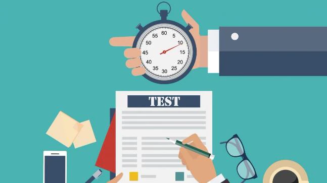

Yawin
June 8, 2022
1 Commets
What is the Semester Examination System? How is our GPA calculated?
Examination System
Revision tips
- A realistic revision schedule. Work out how much you have to do and the time you have to do it in, then break it down into manageable chunks. Aim to do a few hours of revision each day, and mix up your subjects so you do not get bored.
- Find a revision style that suits you. Studying alone in a quiet room suits some people, but not everyone likes working in silence. Try playing music quietly in the background, or revising with a friend (but do not let them distract you!).
- Customise your notes to make them more personal. Experiment with colour coding, notes on postcards, diagrams or whatever helps you learn your topic.
- Make sure you understand everything. If you come across something you do not understand, try to find a new source of information that will help you understand it. Just memorising it will not help you in your exam. Do not be afraid to ask your teacher or a friend for help if you need it.
- Look at past exam papers. It means you can familiarise yourself with the layout and type of questions you'll be asked. Practise completing exam papers in the set time limit to improve your exam technique.
- Take regular short breaks. Studying for hours and hours will only make you tired and ruin your concentration, which may make you even more anxious. A break every 45 to 60 minutes is about right.
- Reward yourself. For example, you could take a long bath or watch a good movie once you have finished your revision session.
- Do something physical. When you're not revising, use your spare time to get away from your books and do something active. Exercise is good for taking your mind off stress and keeping you positive, and it will help you sleep better.
- Ask for help. If you're feeling stressed, it's important to talk to someone you trust, such as a family member, teacher or a friend. Lots of people find exams difficult to deal with, so do not be embarrassed to ask for support.
- Be prepared. Start the day with a good breakfast, and give yourself plenty of time to get to the exam hall. Remember to take everything you need, including pencils, pens and a calculator. A bottle of water and some tissues are also useful.
- Take a few minutes to read the instructions and questions. Then you'll know exactly what's expected of you. Ask an exam supervisor if anything is unclear – they're there to help you.
- Plan how much time you'll need for each question. Do not panic if you get stuck on a question, but try to leave yourself enough time at the end to come back to it.
- Once the exam is finished, forget about it. Do not spend too much time going over it in your head or comparing answers with your friends. Just focus on the next exam instead.